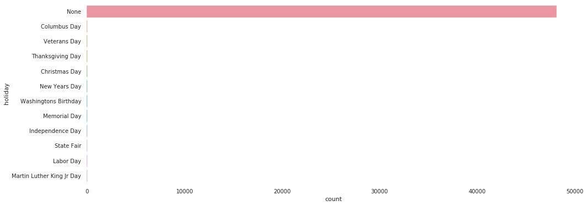
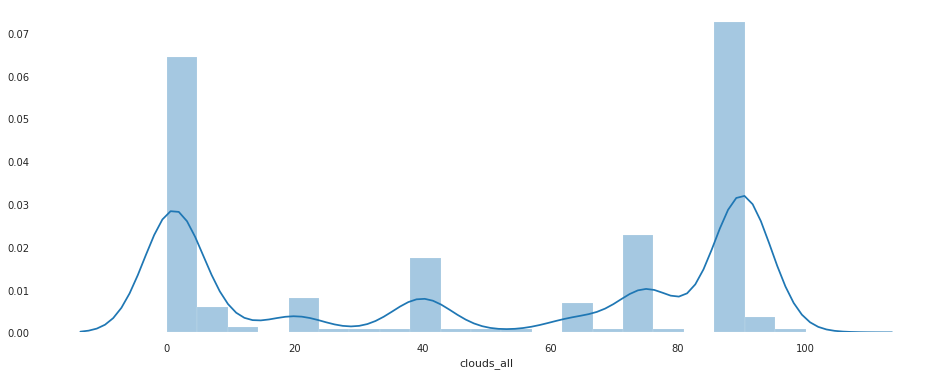
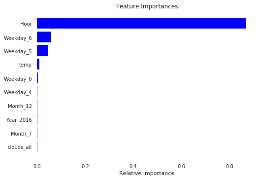

Metro Interstate Traffic Volume Analysis

Metro Interstate Traffic Volume Analysis
Introduction
In this notebook, I will discuss the results of my second assignment of the class Introduction to Artificial Intelligence. My job was to predict the traffic volume on Metro Interstate with machine learning models. Finally, I will discuss my results and present some insights into the data.
Dataset
The dataset used for this assignment is used by many people all over the world, mainly for learning purposes.
About: Hourly Interstate 94 Westbound traffic volume for MN DoT ATR station 301, roughly midway between Minneapolis and St Paul, MN. Hourly weather features and holidays included for impacts on traffic volume.
This dataset is available at: https://archive.ics.uci.edu/ml/machine-learning-databases/00492/
Importing Packages
# Data Preprocessing Packages
import pandas as pd
import numpy as np
from sklearn import preprocessing
from sklearn.preprocessing import LabelEncoder, OneHotEncoder
import re
# Data Visualization Packages
import matplotlib.pyplot as plt
import seaborn as sns
import pandas_profiling as pf
from sklearn.ensemble import RandomForestRegressor
# Models and Metrics
from sklearn import model_selection, svm
from sklearn.svm import SVR
from sklearn.metrics import auc, accuracy_score, confusion_matrix, mean_squared_error, mean_absolute_error, r2_score
from sklearn.model_selection import cross_val_score, cross_val_predict,GridSearchCV, StratifiedKFold, KFold, RandomizedSearchCV, train_test_split
import xgboost as xgb
Getting the data:
dataset = False
if dataset:
df = pd.read_csv("metro.csv")
else:
df = pd.read_csv("https://archive.ics.uci.edu/ml/machine-learning-databases/00492/Metro_Interstate_Traffic_Volume.csv.gz")
df.head()
| holiday | temp | rain_1h | snow_1h | clouds_all | weather_main | weather_description | date_time | traffic_volume | |
|---|---|---|---|---|---|---|---|---|---|
| 0 | None | 288.28 | 0.0 | 0.0 | 40 | Clouds | scattered clouds | 2012-10-02 09:00:00 | 5545 |
| 1 | None | 289.36 | 0.0 | 0.0 | 75 | Clouds | broken clouds | 2012-10-02 10:00:00 | 4516 |
| 2 | None | 289.58 | 0.0 | 0.0 | 90 | Clouds | overcast clouds | 2012-10-02 11:00:00 | 4767 |
| 3 | None | 290.13 | 0.0 | 0.0 | 90 | Clouds | overcast clouds | 2012-10-02 12:00:00 | 5026 |
| 4 | None | 291.14 | 0.0 | 0.0 | 75 | Clouds | broken clouds | 2012-10-02 13:00:00 | 4918 |
df.info() #Basic information about each column
<class 'pandas.core.frame.DataFrame'>
RangeIndex: 48204 entries, 0 to 48203
Data columns (total 9 columns):
holiday 48204 non-null object
temp 48204 non-null float64
rain_1h 48204 non-null float64
snow_1h 48204 non-null float64
clouds_all 48204 non-null int64
weather_main 48204 non-null object
weather_description 48204 non-null object
date_time 48204 non-null object
traffic_volume 48204 non-null int64
dtypes: float64(3), int64(2), object(4)
memory usage: 3.3+ MB
Descrições do dataset, valores numéricos e categóricos
df.describe()
| temp | rain_1h | snow_1h | clouds_all | traffic_volume | |
|---|---|---|---|---|---|
| count | 48204.000000 | 48204.000000 | 48204.000000 | 48204.000000 | 48204.000000 |
| mean | 281.205870 | 0.334264 | 0.000222 | 49.362231 | 3259.818355 |
| std | 13.338232 | 44.789133 | 0.008168 | 39.015750 | 1986.860670 |
| min | 0.000000 | 0.000000 | 0.000000 | 0.000000 | 0.000000 |
| 25% | 272.160000 | 0.000000 | 0.000000 | 1.000000 | 1193.000000 |
| 50% | 282.450000 | 0.000000 | 0.000000 | 64.000000 | 3380.000000 |
| 75% | 291.806000 | 0.000000 | 0.000000 | 90.000000 | 4933.000000 |
| max | 310.070000 | 9831.300000 | 0.510000 | 100.000000 | 7280.000000 |
df.describe(include= 'object')
| holiday | weather_main | weather_description | date_time | |
|---|---|---|---|---|
| count | 48204 | 48204 | 48204 | 48204 |
| unique | 12 | 11 | 38 | 40575 |
| top | None | Clouds | sky is clear | 2013-04-18 22:00:00 |
| freq | 48143 | 15164 | 11665 | 6 |
Exploratory Data Analysis:
It is extremely important to know the dataset well since in machine learning is the diversity in the experience that will guarantee success in carrying out a given task. Statistics in this process is very useful, as it provides descriptive measures that demonstrate the main characteristics of the data we are dealing with. Additionally, searching for information about the data and the problem to which it is linked can be of great help and even essential to improve the achievement of the desired task.
About the data:
- Holiday: Indicates if the date is a holiday and if it specifies the holiday, if not None.
- Temp: Indicates the temperature in Kelvin.
- rain_1h: Amount in mm of rain that occurred in the hour.
- snow_1h: Amount in mm of snow that occurred in the hour.
- clouds_all: Percentage of cloud cover.
- weather_main: Short textual description of the current weather.
- weather_description: Longer textual description of the current weather.
- date_time: Hour of the data collected in local CST time.
- traffic_volume: Hourly I-94 ATR 301 reported westbound traffic volume.
disponível em: https://archive.ics.uci.edu/ml/datasets/Metro+Interstate+Traffic+Volume
The first observations to be made with the information we have so far are:
- There is no missing data, but that does not mean that there is no inconsistent data.
- The date_time, a time stamp, is not defined as the pandas' timestamp. The way it was extracted will not bring us any information and that is a big problem. Since in most cities, traffic occurs at rush hour.
- There are temperature records at absolute zero, clearly inconsistent data.
- rain_1h and snow_1h have many zeros and their distribution is not very well defined, since in rare moments they have high records.
- 99.9% of Holiday data is None, and the other data is spread over multiple holidays
Holiday
plt.figure(figsize = (16,6))
sns.countplot(y = df['holiday'])
plt.show()

As normal days are much more frequent over the years of the dataset, then holidays are not visible in the Plot. To analyze them it is necessary to remove the normal days. Then I will categorize between Holiday and Non-Holiday
h_df = df[df['holiday'] != 'None']
plt.figure(figsize = (16,6))
sns.countplot(y = h_df['holiday'])
plt.show()
To solve this problem, I will recategorize all holidays as Holiday and leave them in the same category.
Temperature
plt.figure(figsize = (16,8))
sns.boxplot(df['temp'])
plt.show()
As seen before, some Outliers are at absolute zero, probably due to some error in capturing the temperature. Then I will remove the Outliers so as not to affect my result.
Rain and Snow
plt.figure(figsize = (16,6))
sns.distplot(df['rain_1h'], kde = True)
plt.show()
plt.figure(figsize = (16,6))
sns.distplot(df['snow_1h'], kde = True)
plt.show()
As can be seen, the features have many zeros and the distribution is skewed.
Clouds
plt.figure(figsize = (16,6))
sns.distplot(df['clouds_all'],)
plt.show()
df['clouds_all'].describe()

count 48204.000000
mean 49.362231
std 39.015750
min 0.000000
25% 1.000000
50% 64.000000
75% 90.000000
max 100.000000
Name: clouds_all, dtype: float64
It has many zeros, but does not appear to show any inconsistent data.
Weather Main e Weather Description
plt.figure(figsize = (16,6))
sns.countplot(y = df['weather_main'])
plt.show()
plt.figure(figsize = (16,8))
sns.countplot(y =df['weather_description'])
plt.show()
confusion_matrix = pd.crosstab(df['weather_main'], df['weather_description'])
confusion_matrix.corr(method = 'spearman').style.background_gradient(cmap='coolwarm')
Since weather_description offers only an extension of the description of weather_main, it is probably not of interest to keep both for modeling. Since they carry correlated information, which can be seen in the matrix above.
Data Cleaning
Now that the exploratory data analysis has been done, it will be necessary to clean the dataset, to guarantee the success of the model. The observations made at the EDA will be made below.
Holiday Parsing
def holiday(holiday):
cat = 'None'
if holiday != 'None':
cat = 'Holiday'
return cat
df['holiday'] = df['holiday'].map(holiday)
df['holiday'].unique()
array(['None', 'Holiday'], dtype=object)
Parsing do date_time
def parse_timestamp(df, datetime):
df[datetime] = pd.to_datetime(df[datetime])
df['Year'] = df[datetime].dt.year
df['Month'] = df[datetime].dt.month
df['Weekday'] = df[datetime].dt.weekday
df['Hour'] = df[datetime].dt.hour
def categorize_hour(hour):
cat = 'None'
if hour in [1,2,3,4,5]:
cat = 'dawn'
elif hour in [6,7,8,9,10,11,12]:
cat = 'morning'
elif hour in [13,14,15,16,17,18]:
cat = 'afternoon'
elif hour in [19,20,21,22,23,24]:
cat = 'night'
return cat
Before parsing the date_time i will remove possible duplicates.
df.drop_duplicates(inplace = True)
df.duplicated().sum()
0
parse_timestamp(df, 'date_time')
#df['Hour'] = df['Hour'].map(categorize_hour)
df.head()
| holiday | temp | rain_1h | snow_1h | clouds_all | weather_main | weather_description | date_time | traffic_volume | Year | Month | Weekday | Hour | |
|---|---|---|---|---|---|---|---|---|---|---|---|---|---|
| 0 | None | 288.28 | 0.0 | 0.0 | 40 | Clouds | scattered clouds | 2012-10-02 09:00:00 | 5545 | 2012 | 10 | 1 | 9 |
| 1 | None | 289.36 | 0.0 | 0.0 | 75 | Clouds | broken clouds | 2012-10-02 10:00:00 | 4516 | 2012 | 10 | 1 | 10 |
| 2 | None | 289.58 | 0.0 | 0.0 | 90 | Clouds | overcast clouds | 2012-10-02 11:00:00 | 4767 | 2012 | 10 | 1 | 11 |
| 3 | None | 290.13 | 0.0 | 0.0 | 90 | Clouds | overcast clouds | 2012-10-02 12:00:00 | 5026 | 2012 | 10 | 1 | 12 |
| 4 | None | 291.14 | 0.0 | 0.0 | 75 | Clouds | broken clouds | 2012-10-02 13:00:00 | 4918 | 2012 | 10 | 1 | 13 |
df.set_index('date_time',inplace = True)
df.sort_index()['traffic_volume'].rolling(4000).mean().plot(figsize = (16,8))
plt.xlabel('Date Time')
plt.ylabel('Traffic Volume')
df.head()
| holiday | temp | rain_1h | snow_1h | clouds_all | weather_main | weather_description | traffic_volume | Year | Month | Weekday | Hour | |
|---|---|---|---|---|---|---|---|---|---|---|---|---|
| date_time | ||||||||||||
| 2012-10-02 09:00:00 | None | 288.28 | 0.0 | 0.0 | 40 | Clouds | scattered clouds | 5545 | 2012 | 10 | 1 | 9 |
| 2012-10-02 10:00:00 | None | 289.36 | 0.0 | 0.0 | 75 | Clouds | broken clouds | 4516 | 2012 | 10 | 1 | 10 |
| 2012-10-02 11:00:00 | None | 289.58 | 0.0 | 0.0 | 90 | Clouds | overcast clouds | 4767 | 2012 | 10 | 1 | 11 |
| 2012-10-02 12:00:00 | None | 290.13 | 0.0 | 0.0 | 90 | Clouds | overcast clouds | 5026 | 2012 | 10 | 1 | 12 |
| 2012-10-02 13:00:00 | None | 291.14 | 0.0 | 0.0 | 75 | Clouds | broken clouds | 4918 | 2012 | 10 | 1 | 13 |
Removing Weather_description
I have chosen to remove weather_description due to redundancy when placing with weather_main
df.drop(columns = ['weather_description'], inplace = True)
df.head()
| holiday | temp | rain_1h | snow_1h | clouds_all | weather_main | traffic_volume | Year | Month | Weekday | Hour | |
|---|---|---|---|---|---|---|---|---|---|---|---|
| date_time | |||||||||||
| 2012-10-02 09:00:00 | None | 288.28 | 0.0 | 0.0 | 40 | Clouds | 5545 | 2012 | 10 | 1 | 9 |
| 2012-10-02 10:00:00 | None | 289.36 | 0.0 | 0.0 | 75 | Clouds | 4516 | 2012 | 10 | 1 | 10 |
| 2012-10-02 11:00:00 | None | 289.58 | 0.0 | 0.0 | 90 | Clouds | 4767 | 2012 | 10 | 1 | 11 |
| 2012-10-02 12:00:00 | None | 290.13 | 0.0 | 0.0 | 90 | Clouds | 5026 | 2012 | 10 | 1 | 12 |
| 2012-10-02 13:00:00 | None | 291.14 | 0.0 | 0.0 | 75 | Clouds | 4918 | 2012 | 10 | 1 | 13 |
Removendo rain_1h e snow_1h
As the distribution of rain_1h and snow_1h is not good and the vast majority of values are at zero, I will remove them, since the weather information includes whether it is raining, snowing, or neither.
df.drop(columns = ['rain_1h','snow_1h'],inplace = True)
df.head()
| holiday | temp | clouds_all | weather_main | traffic_volume | Year | Month | Weekday | Hour | |
|---|---|---|---|---|---|---|---|---|---|
| date_time | |||||||||
| 2012-10-02 09:00:00 | None | 288.28 | 40 | Clouds | 5545 | 2012 | 10 | 1 | 9 |
| 2012-10-02 10:00:00 | None | 289.36 | 75 | Clouds | 4516 | 2012 | 10 | 1 | 10 |
| 2012-10-02 11:00:00 | None | 289.58 | 90 | Clouds | 4767 | 2012 | 10 | 1 | 11 |
| 2012-10-02 12:00:00 | None | 290.13 | 90 | Clouds | 5026 | 2012 | 10 | 1 | 12 |
| 2012-10-02 13:00:00 | None | 291.14 | 75 | Clouds | 4918 | 2012 | 10 | 1 | 13 |
Feature Importance
I will run a Random Forest in order to find the importance of each feature for the result of traffic_volume. However, it is necessary to transform categorical data first.
Splitting Features and Traffic Volume
feats = df.drop('traffic_volume',1).copy()
label = df['traffic_volume'].copy()
feats.head()
| holiday | temp | clouds_all | weather_main | Year | Month | Weekday | Hour | |
|---|---|---|---|---|---|---|---|---|
| date_time | ||||||||
| 2012-10-02 09:00:00 | None | 288.28 | 40 | Clouds | 2012 | 10 | 1 | 9 |
| 2012-10-02 10:00:00 | None | 289.36 | 75 | Clouds | 2012 | 10 | 1 | 10 |
| 2012-10-02 11:00:00 | None | 289.58 | 90 | Clouds | 2012 | 10 | 1 | 11 |
| 2012-10-02 12:00:00 | None | 290.13 | 90 | Clouds | 2012 | 10 | 1 | 12 |
| 2012-10-02 13:00:00 | None | 291.14 | 75 | Clouds | 2012 | 10 | 1 | 13 |
Copy with Label Enconder of the features
le = LabelEncoder()
num_feats = feats.copy()
for column in num_feats.columns:
if num_feats[column].dtype == 'object':
num_feats[column] = le.fit_transform(num_feats[column])
num_feats.head()
| holiday | temp | clouds_all | weather_main | Year | Month | Weekday | Hour | |
|---|---|---|---|---|---|---|---|---|
| date_time | ||||||||
| 2012-10-02 09:00:00 | 1 | 288.28 | 40 | 1 | 2012 | 10 | 1 | 9 |
| 2012-10-02 10:00:00 | 1 | 289.36 | 75 | 1 | 2012 | 10 | 1 | 10 |
| 2012-10-02 11:00:00 | 1 | 289.58 | 90 | 1 | 2012 | 10 | 1 | 11 |
| 2012-10-02 12:00:00 | 1 | 290.13 | 90 | 1 | 2012 | 10 | 1 | 12 |
| 2012-10-02 13:00:00 | 1 | 291.14 | 75 | 1 | 2012 | 10 | 1 | 13 |
Copy with One Hot Enconding of the features
onehot_feats = feats.copy()
onehot_feats[['Year','Month','Weekday']] = feats[['Year','Month','Weekday']].astype('category')
onehot_feats = pd.get_dummies(onehot_feats)
onehot_feats.head()
| temp | clouds_all | Hour | holiday_Holiday | holiday_None | weather_main_Clear | weather_main_Clouds | weather_main_Drizzle | weather_main_Fog | weather_main_Haze | ... | Month_10 | Month_11 | Month_12 | Weekday_0 | Weekday_1 | Weekday_2 | Weekday_3 | Weekday_4 | Weekday_5 | Weekday_6 | |
|---|---|---|---|---|---|---|---|---|---|---|---|---|---|---|---|---|---|---|---|---|---|
| date_time | |||||||||||||||||||||
| 2012-10-02 09:00:00 | 288.28 | 40 | 9 | 0 | 1 | 0 | 1 | 0 | 0 | 0 | ... | 1 | 0 | 0 | 0 | 1 | 0 | 0 | 0 | 0 | 0 |
| 2012-10-02 10:00:00 | 289.36 | 75 | 10 | 0 | 1 | 0 | 1 | 0 | 0 | 0 | ... | 1 | 0 | 0 | 0 | 1 | 0 | 0 | 0 | 0 | 0 |
| 2012-10-02 11:00:00 | 289.58 | 90 | 11 | 0 | 1 | 0 | 1 | 0 | 0 | 0 | ... | 1 | 0 | 0 | 0 | 1 | 0 | 0 | 0 | 0 | 0 |
| 2012-10-02 12:00:00 | 290.13 | 90 | 12 | 0 | 1 | 0 | 1 | 0 | 0 | 0 | ... | 1 | 0 | 0 | 0 | 1 | 0 | 0 | 0 | 0 | 0 |
| 2012-10-02 13:00:00 | 291.14 | 75 | 13 | 0 | 1 | 0 | 1 | 0 | 0 | 0 | ... | 1 | 0 | 0 | 0 | 1 | 0 | 0 | 0 | 0 | 0 |
5 rows × 42 columns
Feature Importance - Label Encoder
model = RandomForestRegressor(random_state=1, max_depth=10)
model.fit(num_feats,label)
#Plot
features = feats.columns
importances = model.feature_importances_
indices = np.argsort(importances)[-5:] #Top 5 features
plt.title('Feature Importances')
plt.barh(range(len(indices)), importances[indices], color='b', align='center')
plt.yticks(range(len(indices)), [features[i] for i in indices])
plt.xlabel('Relative Importance')
plt.show()
Feature Importance - One Hot Encoding
model = RandomForestRegressor(random_state=1, max_depth=10)
model.fit(onehot_feats,label)
#Plot t
features = onehot_feats.columns
importances = model.feature_importances_
indices = np.argsort(importances)[-10:] #Top 10 features
plt.title('Feature Importances')
plt.barh(range(len(indices)), importances[indices], color='b', align='center')
plt.yticks(range(len(indices)), [features[i] for i in indices])
plt.xlabel('Relative Importance')
plt.show()

It is clear now that the hour feature is the one that most influences the traffic volume. This can be commonly observed in big cities where at rush hour the traffic volume is high.
Scaling
Necessary to keep the numerical values in a range and consequently one feature does not stand out much more than the other when training the model.
X = num_feats.values
X = preprocessing.scale(X)
y = label.values
print(X)
print(y)
[[ 0.03560205 0.53041592 -0.24004863 ... 1.02779521 -0.98947829
-0.34548099]
[ 0.03560205 0.61138394 0.65704665 ... 1.02779521 -0.98947829
-0.20139502]
[ 0.03560205 0.62787742 1.04151605 ... 1.02779521 -0.98947829
-0.05730906]
...
[ 0.03560205 0.11433026 1.04151605 ... 0.73369913 1.50301966
1.38355059]
[ 0.03560205 0.06634921 1.04151605 ... 0.73369913 1.50301966
1.52763656]
[ 0.03560205 0.06859832 1.04151605 ... 0.73369913 1.50301966
1.67172252]]
[5545 4516 4767 ... 2159 1450 954]
Train and Test
Holdout(0.7; 0.3)
The dataset will be randomly split between training and testing. For this task, we will divide 70% for training, while the rest will be used for testing.
X_train, X_test, y_train, y_test = train_test_split(X,y,test_size=0.3, random_state = 42)
X_train.shape
(33730, 8)
Random Forest
It is a supervised ML(Machine Learning) algorithm. Creates several decision trees and combines them to obtain a better prediction.
Random forest adds randomness to the model when creating trees. It searches for the best attribute in a random subset of the attribute. This creates diversity and generates better models. For this reason, it was possible to find the importance of attributes, performed previously.
Advantages:
- Can be used for classification and regression.
- Handles missing values well.
- It will hardly overfit the model.
- Handles large, high dimensional data sets very well (Main reason for choosing this method)
Disadvantages:
- The programmer does not have much control on the model, it generates black box.
Random Forest Example:
reg = RandomForestRegressor()
reg = reg.fit(X_train,y_train)
predict = reg.predict(X_test)
accuracy = reg.score(X_test, y_test)
mae = mean_absolute_error(y_test, predict)
print(f"R2 Score: {round(accuracy * 100, 3)}%")
print(f"Mean Absolute Error: {round(mae, 4)}")
print(f'RMSE: {round(np.sqrt(mean_squared_error(y_pred=predict,y_true=y_test)),4)}')
R2 Score: 95.901%
Mean Absolute Error: 221.4494
RMSE: 405.0598
XGBoost
It is an implementation of the Gradient Boost supervised ML algorithm, famous for its speed and performance. Gradient Boost tries to predict a target variable, for this it combines a group of estimates from a set of simpler and ‘weaker’ models and transforms them into a ‘stronger’ model.
Gradient Boosting Example:
In this example, it can be seen that Gradient Boosting is a method in which new models are trained to resolve errors from previous models.
xgb_model = xgb.XGBRegressor(objective="reg:squarederror", n_estimators=1000, random_state=42,n_jobs=-1)
xgb_model.fit(X_train,y_train,early_stopping_rounds=10,eval_set=[(X_test, y_test)],verbose = 0)
y_pred = xgb_model.predict(X_test)
xgb_mae = mean_absolute_error(y_test, y_pred)
print(f'R2 Score: {round(xgb_model.score(X_test,y_test)*100,2)}')
print(f'RMSE: {np.sqrt(mean_squared_error(y_pred=y_pred,y_true=y_test))}')
print(f"Mean Absolute Error: {round(xgb_mae, 4)}")
R2 Score: 96.19
RMSE: 390.32545493877905
Mean Absolute Error: 232.6679
Cross-Validation
In this method, the dataset is divided into K parts, while K-1 parts are used for training the remaining partition is used for testing until all the dataset is utilized. The validation of each forecast made is saved in a list and then the average of each metric will be made.
kf = model_selection.KFold(n_splits=10, shuffle=True, random_state=42)
Random Forest
rmse = []
r2 = []
mae_l = []
for train_index, test_index in kf.split(X):
reg_kf = RandomForestRegressor()
reg_kf.fit(X[train_index],y[train_index])
y_pred = reg_kf.predict(X[test_index])
actuals = y[test_index]
rmse.append(np.sqrt(mean_squared_error(actuals, y_pred)))
r2.append(r2_score(actuals,y_pred))
mae_l.append(mean_absolute_error(actuals, y_pred))
avg_r2 = np.mean(r2)
avg_rmse = np.mean(rmse)
avg_mae = np.mean(mae_l)
print(f'AVG R2 Score :{round(avg_r2,3)*100}%\t Average RMSE:{avg_rmse}\t Average MAE:{round(avg_mae, 4)}')
AVG R2 Score :95.7% Average RMSE:409.69403930472544 Average MAE:217.4925
XGBoost
rmse = []
r2 = []
mae_l = []
for train_index, test_index in kf.split(X):
xgb_model = xgb.XGBRegressor(objective="reg:squarederror", n_estimators=1000, random_state=42,n_jobs=-1)
xgb_model.fit(X[train_index],y[train_index],early_stopping_rounds=10,eval_set=[(X[test_index], y[test_index])], verbose = 0)
predictions = xgb_model.predict(X[test_index])
actuals = y[test_index]
rmse.append(np.sqrt(mean_squared_error(actuals, predictions)))
r2.append(r2_score(actuals,predictions))
mae_l.append(mean_absolute_error(actuals, predictions))
avg_r2 = np.mean(r2)
avg_rmse = np.mean(rmse)
avg_mae = np.mean(mae_l)
print(f'AVG R2 Score :{round(avg_r2,3)*100}%\t Average RMSE:{avg_rmse}\t Average MAE:{round(avg_mae, 4)}')
AVG R2 Score :96.1% Average RMSE:390.5595082859465 Average MAE:229.8818
Results and Discussion:
The metrics chosen for the evaluation of the models were:
- RMSE(Root Mean Squared Error), average of the difference between the actual and the predicted value.
- MAE(Mean Absolute Error), module mean of the difference between the actual and the predicted value.
- R²(R Squared), it is a measure that demonstrates how much the model explains the variance of the real value. It varies between zero and one, the closer to one the more adjusted to the sample is the model.
From the results presented for each model, it is noticeable that the forecasts fit well with the expected sample. The Holdout method showed better efficiency for the problem than the cross-validation, although the results are not so different. The XGBoost algorithm obtained forecasts with less error and more adjusted to the original sample.
Despite the satisfying result of the predictive models, they may not be efficient for certain applications, like a route recommendation system, where the value must be very precise. To solve this problem, the next works are expected to implement specific models for time-based problems, such as Recurrent Neural Networks (RNN) and ARIMA, since the features that are most relevant to the problem are related to time series.
João Pedro Vasconcelos Teixeira
Undergraduate Researcher
My research interests include computer vision, natural language processing and machine learning